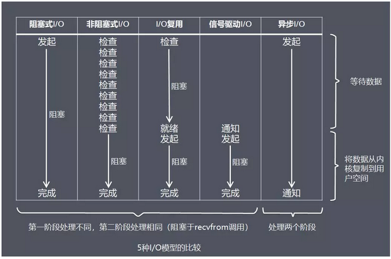
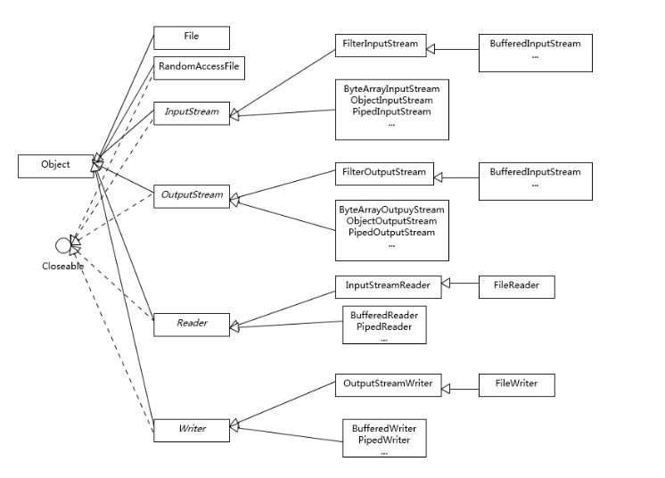
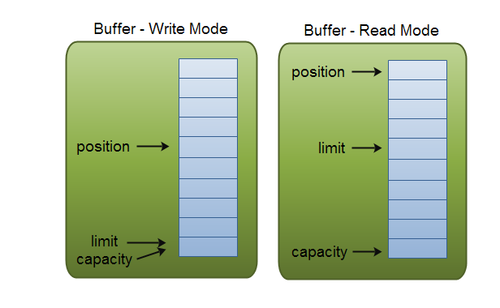

I/O模型
- 阻塞与非阻塞：阻塞调用是指调用结果返回之前，当前线程被挂起。调用线程只有在得到结果之后才会继续。非阻塞是指调用方在未得到被调用方的结果，并不会发生阻塞。
- 异步同步：同步处理是指被调用方得到最终结果之后才返回给调用方；异步处理是指被调用方先返回应答，然后再计算调用结果，计算完最终结果后再通知并返回给调用方。
5 种IO模型
- 阻塞式I/O 模型（blocking i/o）
- 非阻塞I/O 模型（non-blocking i/o）
- I/O 复用 （I/O multiplexing）
- 信号驱动式I/O 模型（signal-dirven I/O)
- 异步I/O 模型（asynchronous I/O）

线程模型
1.传统阻塞I/O服务模型
2.针对1改进方案a:基于I/O复用模型
3.针对1改进方案b:基于线程池复用线程资源
4.结合2和3的Reactor（Dispatch）模型
5.常见模型主从reactor+多线程池（Nginx）
6.异步Proactor模型
Java NIO和IO的主要区别
| IO | NIO |
|---|---|
| 面向流 | 面向缓冲 |
| 阻塞IO | 非阻塞IO |
| 无 | 选择器 |
BIO 常见类图

Buffer的基本用法
- 写入数据到Buffer
- 调用flip()方法
- 从Buffer中读取数据
调用clear()方法或者compact()方法（compact()方法只会清除已经读过的数据，clear()方法会清空整个缓冲区）
1
2
3
4
5
6
7
8
9
10
11
12
13
14
15
16
17
18
19
20
21
22public class FileChannelDemo {
public static void main(String[] args) {
try (RandomAccessFile rw = new RandomAccessFile("c:/test/test.txt", "rw")) {
FileChannel channel = rw.getChannel();
ByteBuffer byteBuffer = ByteBuffer.allocate(2);
int read = channel.read(byteBuffer);
while (read!=-1){
System.out.println(read);
byteBuffer.flip();
while (byteBuffer.hasRemaining()){
System.out.println((char) byteBuffer.get());
}
byteBuffer.clear();
read=channel.read(byteBuffer);
}
} catch (FileNotFoundException e) {
e.printStackTrace();
} catch (IOException e) {
e.printStackTrace();
}
}
}Buffer的capacity,position和limit
三种实现方式
- transferFrom()
transferTo()
1
2
3
4
5
6
7
8
9
10
11
12try (RandomAccessFile rw = new RandomAccessFile("c:/test/test.txt", "rw");
RandomAccessFile rw1 = new RandomAccessFile("c:test/test1.txt", "rw")) {
FileChannel from = rw.getChannel();
FileChannel to = rw1.getChannel();
long position = 0;
long count = from.size();
from.transferTo(position, count, to);
to.transferFrom(from,position, count);
}强制写进磁盘
channel.force(true);SocketChannel
- 打开一个SocketChannel并连接到互联网上的某台服务器
一个新连接到达ServerSocketChannel时，会创建一个SocketChannel
Selector
- 创建
1
Selector selector = Selector.open();
- 创建
注册
1
2
3channel.configureBlocking(false);
SelectionKey key = channel.register(selector,
Selectionkey.OP_READ);监听事件
- Connect(SelectionKey.OP_CONNECT)
- Accept(SelectionKey.OP_ACCEPT)
- Read(SelectionKey.OP_READ)
- Write(SelectionKey.OP_WRITE)
- SelectionKey
1
2
3
4
5
6
7
8
9
10
11
12
13
14
15
16
17
18
19
20
21
22
23
24Selector selector = Selector.open();
channel.configureBlocking(false);
SelectionKey key =channel.register(selector,SelectionKey.OP_READ);
while (true){
int ready = selector.select();
if (ready==0) continue;
//一旦调用了select()方法，并且返回值表明有一个或更多个通道就绪了，然后可以通过调用selector的selectedKeys()方法，访问“已选择键集（selected key set）”中的就绪通道
Set<SelectionKey> selectionKeys = selector.selectedKeys();
Iterator<SelectionKey> iterator = selectionKeys.iterator();
while (iterator.hasNext()){
SelectionKey key1 = iterator.next();
if (key.isAcceptable()){
}else if (key.isConnectable()){
}else if (key.isReadable()){
}else if (key.isWritable()){
}
//。必须在处理完通道时自己移除。下次该通道变成就绪时，Selector会再次将其放入已选择键集中。
iterator.remove();
}
}
AsynchronousFileChannel
1 | public static void main(String[] args) throws InterruptedException { |
## 参考